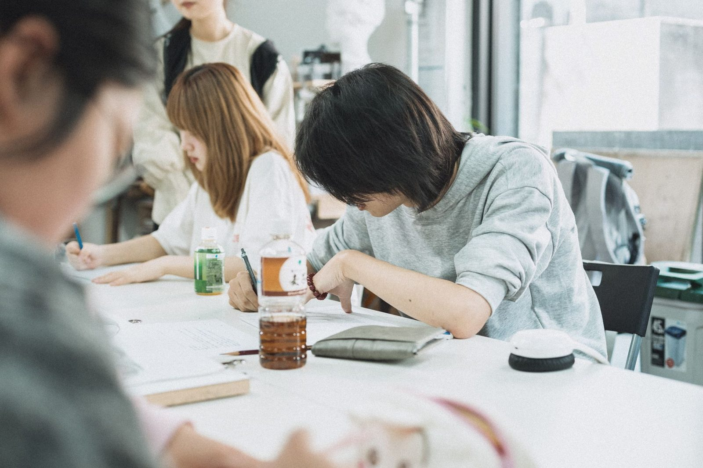
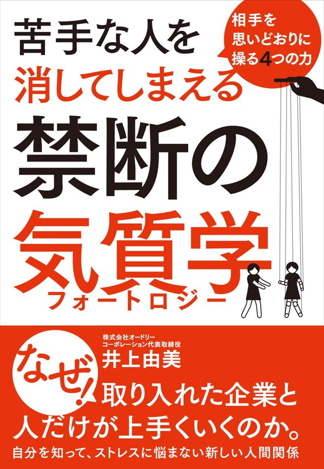

誰もが4つの気質をすべて持っていて、その配分が「その人らしさ」になります。たとえば「エンジョイ40％・ウィナー25％・パーフェクト20％・サイレンス15％」のように、一人ひとり違う割合で結果が出ます。自分の気質と合わない環境に身を置くと、本来の力を発揮できないまま息切れしてしまう。気質を知ることは、学生を守ることでもあります。
「あなたは○○タイプ」と一つの型にはめないから、学生本人が「たしかにそうだ」と納得できる。納得できるから、自分の言葉になる。20年間、企業の採用と人材育成の現場で検証してきた手法を、学生が社会に出る前の段階へ届けます。
キャリア面談がうまく進まないのは、学生のやる気の問題でも、先生の経験不足でもありません。お互いに「見えていないもの」があるからです。
フォートロジーの結果は、その「見えていないもの」を机の上に置きます。先生には面談の切り口が生まれ、学生には自分を語る言葉が生まれる。「やりたいことは？」から始めなくてよくなり、同じ15分の面談でも、学生の言葉で話が進むようになります。
簡単診断はこちら
テンプレートではない自己PRになる。診断結果の言葉を、自分の経験と結びつけて語れるようになります。

知名度や周りの空気ではなく、「自分に合うか」で判断できる。志望業界の軸が定まります。
選んだ理由が自分の中にあるから、入社後の小さな違和感に揺らぎにくい。早期離職の予防につながります。
初対面の学生とも、結果を挟んで具体的な話から入れる。「やりたいことは？」から始めなくてよくなります。
気質が違えば、響く言葉も違う。結論から言うべき学生か、まず気持ちを受け止めるべき学生かが見えます。
「就職率」の先にある定着まで視野に入る。送り出した企業からの信頼が、学校の信頼になります。
スマホで約10分。入学直後に「自分を知る」きっかけをつくり、その後の面談の共通言語にします。
結果を机に置いて面談を始める。先生は切り口を、学生は自分の言葉を手に入れます。
職種との相性をもとに、志望業界と自己PRを組み立てる。ゼミ・クラス単位のワークにも。
「なぜこの会社を選んだか」を結果で振り返り、入社前の不安を減らす。早期離職の予防に。
札幌から福岡まで、全国の企業の採用・人材育成を支援してきました。「人を見抜き、定着させる」ために磨いてきた手法を、学生が社会に出る前の段階へ届けます。

2026年10月13日（火）〜15日（木）、グランキューブ大阪で開催される西日本最大の教育展示会「EDIX大阪2026」に出展します。ブースでは、その場で50問を受検いただけます。ご自身の結果を見ながら、「これを学生の面談でどう使うか」を担当者が個別にご案内します。